现在每个项目都有自己的主分支（project_codebase.upstream_ref：任务从它开始，做完的工作最后合进它），默认 refs/heads/main，平台不去仓库里猜。但 Web、iOS、Android 都没有地方看到或改它，只能在终端跑 orbit project update --upstream-ref 或调 API；界面上所有说「合进哪里」的句子又一律写死 main。仓库主分支叫 master 的项目，按下 Start 后任务一启动就报 BASE_REF_NOT_FOUND；一旦开始集成，线就锁住，再也改不了。
下面每张图都是真实 Web 页面的截图，不是画的：「现在」是 main 5b794d643，「改后」是同一份代码加上这次的改动跑出来的。例子是一个仓库主分支叫 master 的支付项目（工作区 payments-api，本地分支 develop / master / release/2.4）。虚线和标签是标注。同一个仓库选过一次，以后的新项目自动带上（⑥）。主分支是 main 的项目，除了多出 Main branch 这一行、锁定说明多半句，其它文字不变。
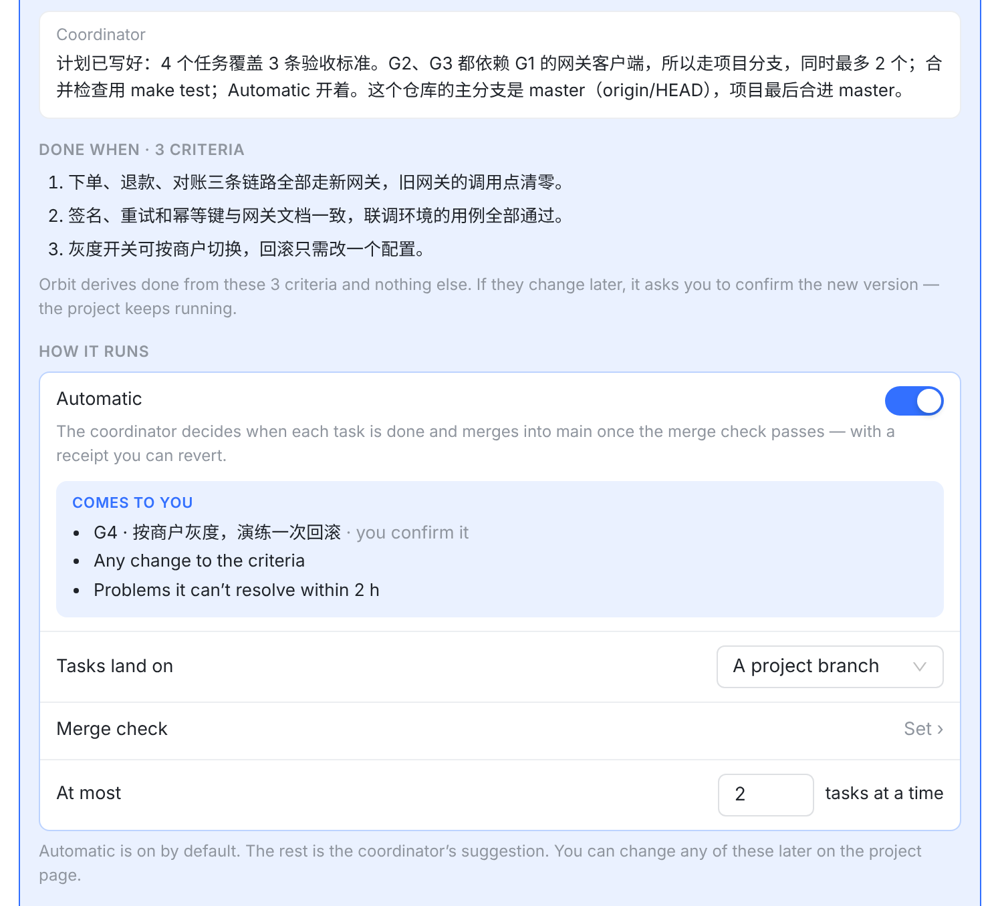
协调者知道是 master，卡上却没地方填写死 main没有选主分支的地方协调者在话里说了主分支是 master，可 How it runs 里没有这一项。按下 Start，项目绑到 refs/heads/main；这个仓库没有 main，任务一启动就报 BASE_REF_NOT_FOUND，只能去终端改。Automatic 那句也写着 merges into main。
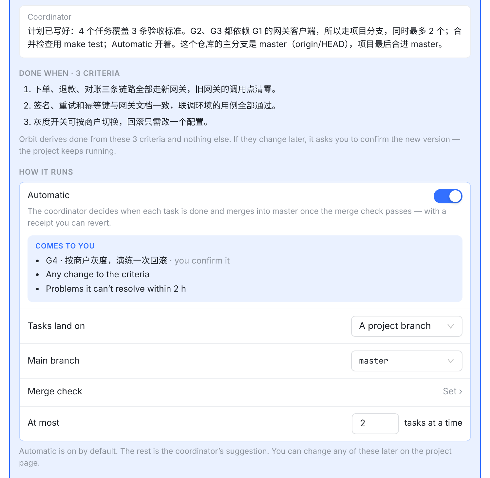
跟着叫 master新增：协调者建议的 masterTasks land on 下面多一行 Main branch，值是协调者在请求里建议的 master（方案 A）。卡上所有说「合进哪里」的句子都换成 master。按下 Start 时连同 upstreamRef: refs/heads/master 一起写入，任务从 master 开始。
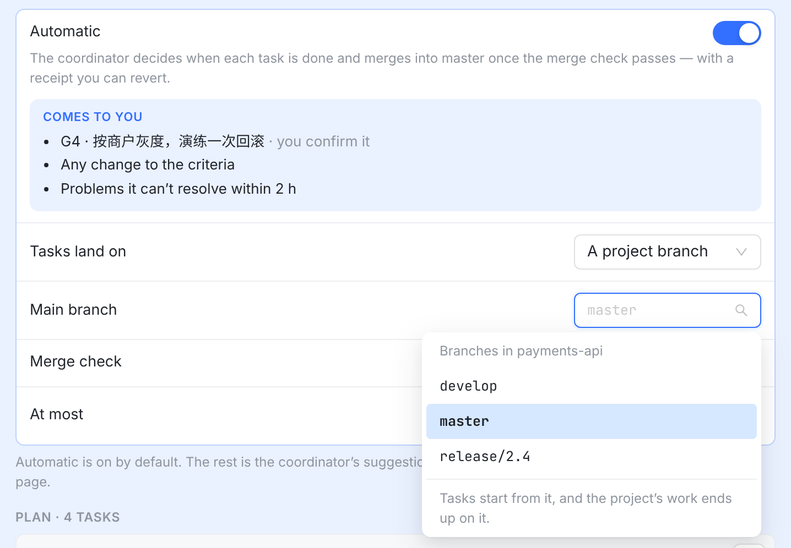
runner 报上来的分支列出 runner 给这个工作区报上来的本地分支，和会话状态栏 Merge 菜单是同一份（去掉 Orbit 自己的 orbit/*）。最下面一句说明这一项决定什么。
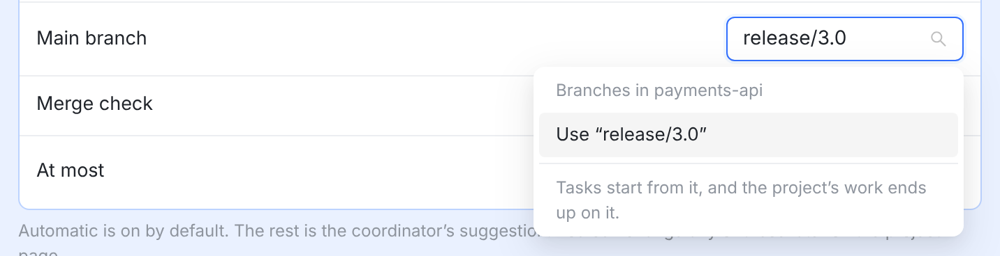
手输的分支远端才有、runner 还没报上来的分支，直接输入后选 Use。不像分支名的（带空格、..、~^:?*[ 等）不出现 Use。runner 一个分支都没报时，下拉只能输入。
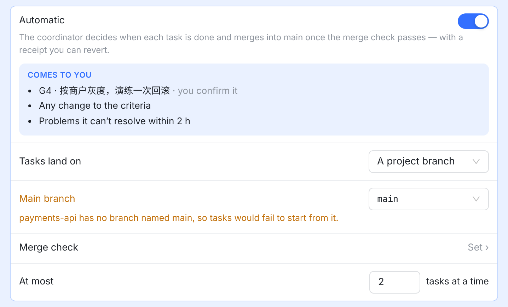
方案 B 才有协调者没建议主分支时（比如旧版协调者），值是 main。main 不在报上来的分支里，就在这一行下面用琥珀色说一句。只提示，不拦 Start，因为列表是工作区的本地分支，不一定和远端一致。
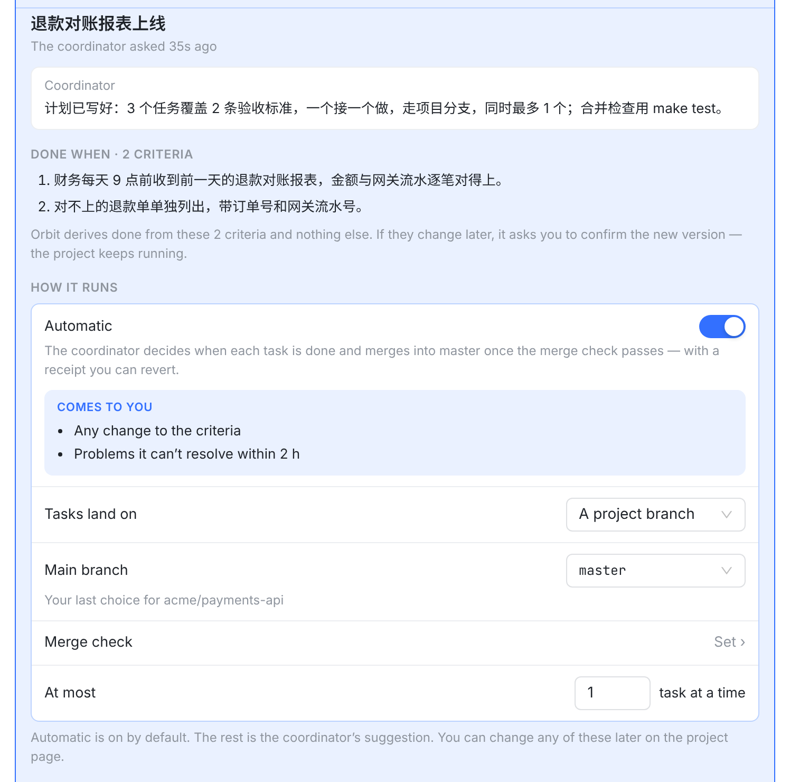
你上次给这个仓库选的两天前你给 acme/payments-api 的第一个项目选了 master。这次协调者没建议，卡上直接就是 master，下面一行小字说明它从哪来。改成别的也行，改了就成为这个仓库新的「上次」。
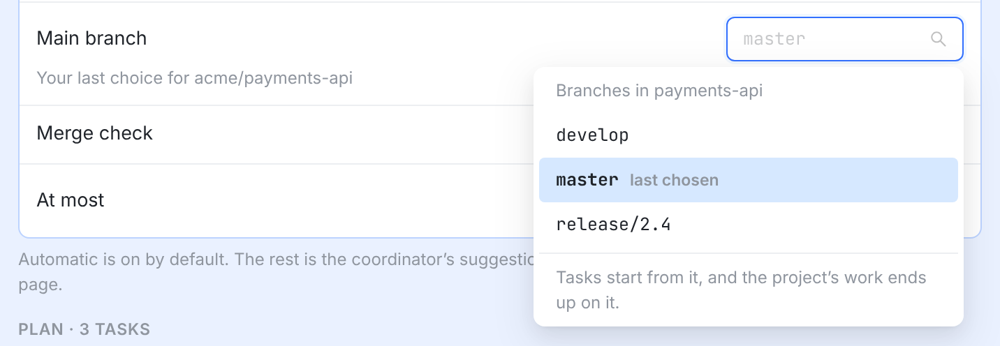
上次选的分支后面标 last chosen，和会话 Merge 菜单在当前目标后面标 selected 是同一个做法。
orbit project update --upstream-ref、API。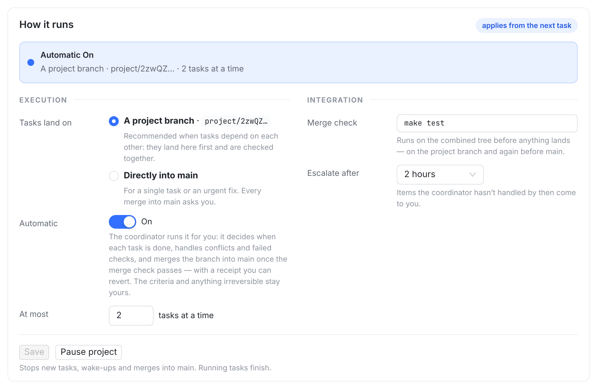
实际是 master写死 main这个项目的主分支已经在终端改成 master，页面上却写着 Directly into main、merges the branch into main、merges into main，也看不到、改不了主分支。
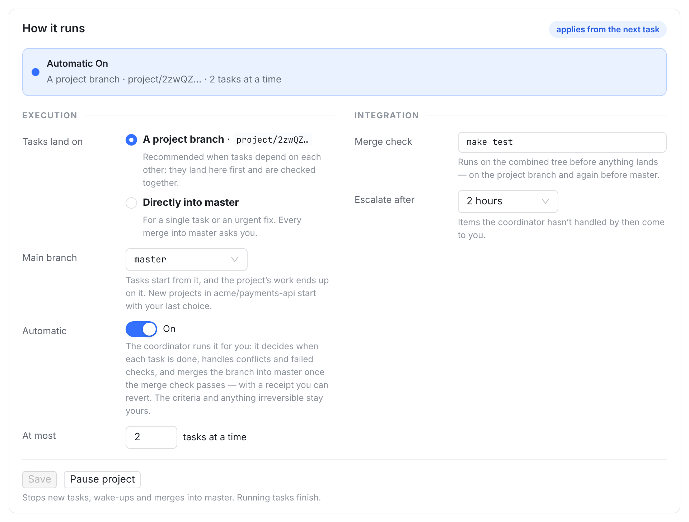
新增跟着叫 master也是这个仓库以后的默认Tasks land on 下面多一行 Main branch，用的是开始卡片上同一个下拉。项目开始后、开始集成前都能改，按 Save 写入（PATCH /projects/:id/integration 的 upstreamRef，和线一起发）。在这里改，也就改了这个仓库以后新项目的默认值，下面那句小字说的就是这个。
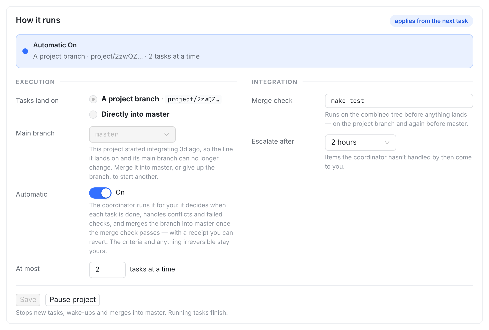
锁定后只读集成一开始，线和主分支就一起锁住（服务端 409 INTEGRATION_LINE_LOCKED，数据库触发器兜底）。下拉变灰；原来写在线下面的锁定说明挪到这一行下面，加上 and its main branch，并且叫 master。
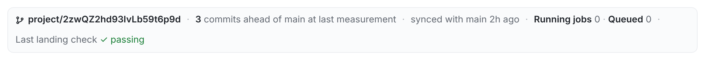
写死 main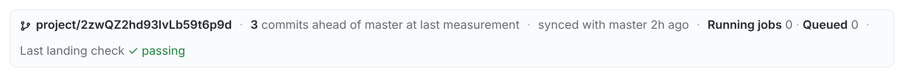
跟着叫 masterahead of main、synced with main 改成项目的主分支名。直接合进主分支的项目，这一行本来就显示主分支名，不变。
| 情况 | 现在 | 改后 |
|---|---|---|
| 谁能改主分支 | 账号所有者，只能用 CLI 或 API | 还是只有账号所有者，多了 Web：开始卡片、项目页 How it runs。agent 会话照旧 403 |
| 新项目的默认值 | 一律 main，平台不探测 | 你上次给同一个仓库选的（⑥）；第一次才用协调者的建议（方案 A）或 main。平台仍然不去仓库里猜 |
| 什么算一次选择 | — | 开始卡片按 Start、How it runs 按 Save、终端、API。删掉那个项目，就退回更早的一次 |
| 下拉里有什么 | — | runner 报上来的工作区本地分支（和会话 Merge 菜单同一份），也可以手输；一个都没报时只能手输。上次选的标 last chosen（⑦） |
| 项目开始后、集成前 | 只能用 CLI 改 | How it runs 里改，按 Save 写入（⑨） |
| 集成开始后 | 改会被 409 拒绝 | 下拉变灰，一句话说明为什么（⑩）；规则本身不变 |
| 说「合进哪里」的文案 | 一律写 main | 叫项目的主分支名。本板改的是设置这一带的 18 句（lib/projectStart.ts 16 句、集成行 2 处）；项目页别处还有二十多句，见待你定 2 |
| 主分支就是 main 的项目 | — | 除了多出 Main branch 一行、锁定说明多半句，其它文字不变 |
| 没有仓库的项目（工作区没记录远端） | — | 不显示这一行：没有分支可合 |
| 手机网页 | — | 同一张卡、同一行，在审阅弹窗里 |
| 输入校验 | 服务端要求 refs/heads/… | 界面只收分支名，自动加 refs/heads/；服务端规则不变 |
lib/projectStart.ts（Main branch 的文案；16 句带 main 的文案改成按分支名生成，参数默认 main）；新组件 MainBranchSelect.tsx（开始卡片和 How it runs 共用）；StartProjectCard.tsx（新一行，Start 时带 upstreamRef，对话里的卡多读一次 integration）；ProjectRunSettings.tsx（新一行，Save 时带 upstreamRef）；ProjectIntegrationLine.tsx；两处都显示「上次选的」（⑥⑦⑨）；index.css 加 .main-branch-*（全表查过，没有重名）。本板就是这份代码跑出来的。ProjectStartSettings.upstreamRef?；ProjectIntegrationView.branches?（下拉的候选：分支名、工作区名、上报时间）、lastMainBranch?（上次选的分支和仓库）、upstreamChosenAt?。POST /projects/:id/start 收 upstreamRef，经 startProjectLine 写进 configureProjectIntegration，已锁定就不动；协调者的开始请求可以带它（方案 A）；integration 读接口加 branches，取协调工作区最近一次上报的 session.mergeTargets。project_codebase 加一列 upstream_ref_chosen_at（一个迁移）：每次写主分支都记下时间；新项目绑定仓库时（开始卡片，或没经过开始卡片、第一次集成时的 bind()）默认取同一账号、同一仓库最近选过的，没有才 main。合同 L6 的默认值要跟着改写。project_request_start 加 upstreamRef 参数，说明里写「填仓库的默认分支（git symbolic-ref refs/remotes/origin/HEAD）」（方案 A；只在这个仓库还没记住选择时用得上）。ProjectPanoramaHeader 的 On main、landed on main、Merge to main；ProjectPromotionCard 的 Merge to main、Merged into main；OwnerConfirmationCard 的 Not on main yet 等 4 句；ProjectAcceptanceCard、ProjectShareControls、projectDone.ts 的 on main；projectAttention.ts、WorkspaceView 的 Approve merge to main；ProjectProgressStatus、ProjectSettlementCard、sessionProjects.ts，以及「Project started」卡的一行摘要。约 12 个文件；合并卡有几处本来就用了真实分支名，现在是混着的。origin/HEAD 就知道；卡上和线、并发数这些建议一样显示，你按 Start 才写入。平台自己仍然不探测（L6 不变），卡上也不加警告（沿用 10-07「Start 卡不放检查警告」）。BASE_REF_NOT_FOUND，再去项目页改。